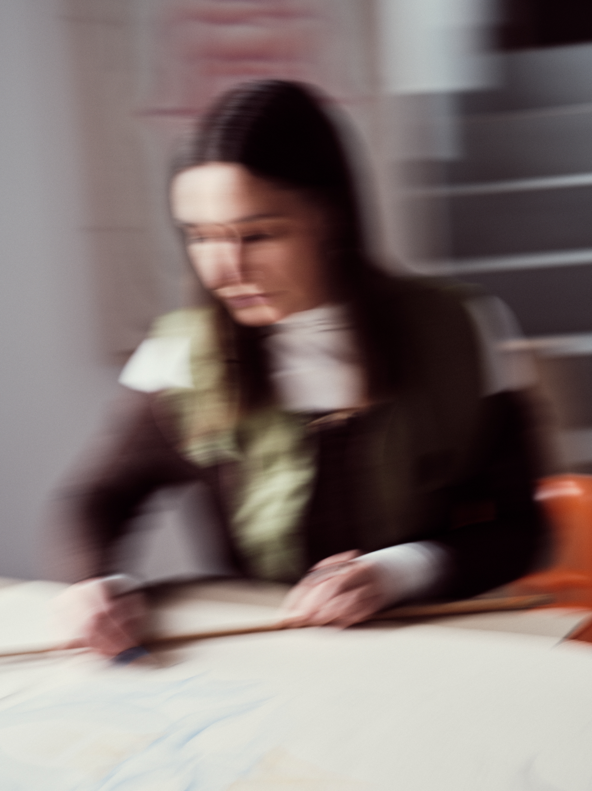

I am an artist, art history graduate and mother. My practice explores the relationship between the body, perception, and environment. While my current practice is centered on drawing, its methodology is highly influenced by my long-standing engagement with video technologies. I use feedback, error, and sensory experience as research-based and artistic tools, investigating processes of destabilization and re-stabilization, alternative modes of cognition, and the intersections of contemporary art, spirituality, and media theory. I am particularly interested in the cycles of imbalance and return to stability - processes present in every system and deeply affected by human behavior. Currently, I am working on a series of drawings that visualize my own body from within, exploring the sensations associated with individual internal organs and various processes.
EXHIBITIONS
Upcomming:
· 20.06 - 9.07.2026 - The Drawing Stall Vol. II, Stellarhighway, New York, USA, curator: Casey Jex Smith
Past:
· 27.09-15.10 - Nowelia Kiliani, Garden Gallery, Warsaw
· 14.06–7.07.2024 – Serce Exhib, Warsaw, PL / Do Flowers Look at Bees?, curator: Kamil Pierwszy
· 27–28.08.2023 – Turnus Gallery, Warsaw, PL / IRIDISUNTO
· 18–19.06.2022 – Karowa Gallery, Warsaw, PL, Mila Nowacka: Presentation of Works and Types of Feedback Loops in Audio-Video Devices
· 8–10.12.2021 – Pracownia Wschodnia, Warsaw, PL / Satin Made of Triggers
PUBLICATIONS
· 04.2026 - Publication of two original works in an album showcasing the work of the most notable contemporary artists who use colored pencil drawing techniques in their artistic practice, USA.
· 01.2026 – Museum of Tomorrow – Digital Models and Artifacts, FRSK. Illustration of Łukasz Adamski’s concept for a museum of the future. Published in print in Art Monitor, Issue No. 30, Poland.
· 09.2025 – Release of the artist’s book Nowelia Kiliani, an art album featuring drawings created between 2020 and 2024.
· 2023 – Illustration and cover design for the album Zwanai Easplaining, published by the Foundation for Research into Possibilities (Fundacja Badań Możliwości), Poland.
· 2022 – Cover illustration for Domestic Flights, an album by Edka Jarząb, published by Pointless Geometry, Poland.
· 2021 – Series of illustrations and design for the album Satin Made of Triggers - Hummings, published by Altanova Press.
· 2021 – Music is Magic – illustrations accompanying a text by Mark O. Pilkington for Supernormal Festival, United Kingdom.
EDUCATION
2010-2013 - Art History, master’s thesis:
“The Phenomenon of Glitch Art in the Context of the History of the
Image”, supervisor: Prof. Dr. Hab. Dorota Folga Januszewska
2007-2010 - Art History, bachelor’s degree
e-mail
instagram
artwork documentation: Kasia Rysiak, Bartosz Górka, Sebastian Rzepka
portrait: Sebastian Rzepka
∿∿∿